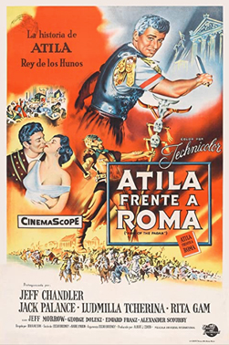
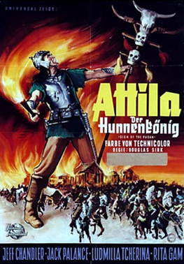
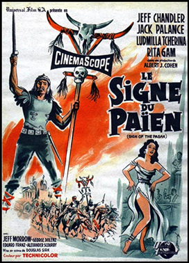

Sign of the Pagan
Norbert Schiller
SYNOPSIS
With the Roman Empire divided, Attila the Hun hopes to conquer. In his way are a brave centurion, a beautiful princess ... and Christianity.
Roman centurion Marcian is captured by Attila the Hun en route to Constantinople, but escapes. On arrival, he finds the eastern Roman emperor Theodosius II plotting with Attila to look the other way while the latter marches against Rome. But Marcian gains the favour of Pulcheria, lovely sister of Theodosius, who strives for a united Empire. As Attila marches, things look bleak for the weakened Imperial forces. But the conqueror has an awe of the power of the Christians' God.
The film was announced by Universal in October 1953. Ludmilla Tchérina was to make her dramatic debut in the film. She was a ballerina who had been signed to a long-term contract to Universal after a series of screen tests, including some with Jeff Chandler.
The movie was going to be Universal's first using Cinemascope. Jack Palance, then coming off a second Oscar nomination (for Shane), soon signed to play Attila the Hun. Chandler told Hedda Hopper that the role was the best he had ever had and that the movie would be Universal's most expensive of that year. Jeff Morrow had a two-film-a-year deal with Universal and appeared in Sign of the Pagan as the second film.
Allison Hayes was a model who was spotted by the wife of Earl Warren at a party in Washington. Mrs Warren suggested she try her luck in Hollywood and she succeeded in getting a contract with Universal. She played Attila's young wife; Jack Palance injured her during their love scenes. Football star Frank Gifford worked as a stuntman in some of the action scenes.
Another film about Attila the Hun came out around the same time: Attila, starring Anthony Quinn in the title role. A novelisation of the script by Roger Fuller was published in 1955 in time for the film's release.
Universal bought a script by Harold Lamb, Hannibal of Carthage, as a possible sequel, also to star Jack Palance. However, it was never made.


